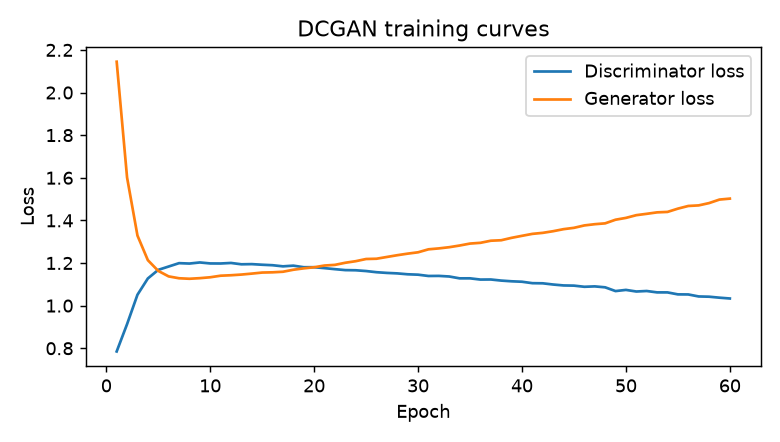
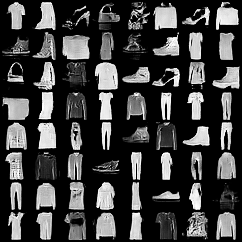
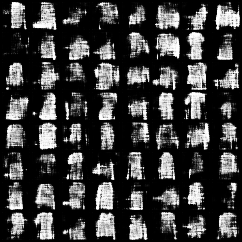
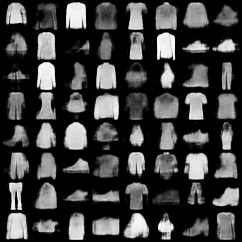
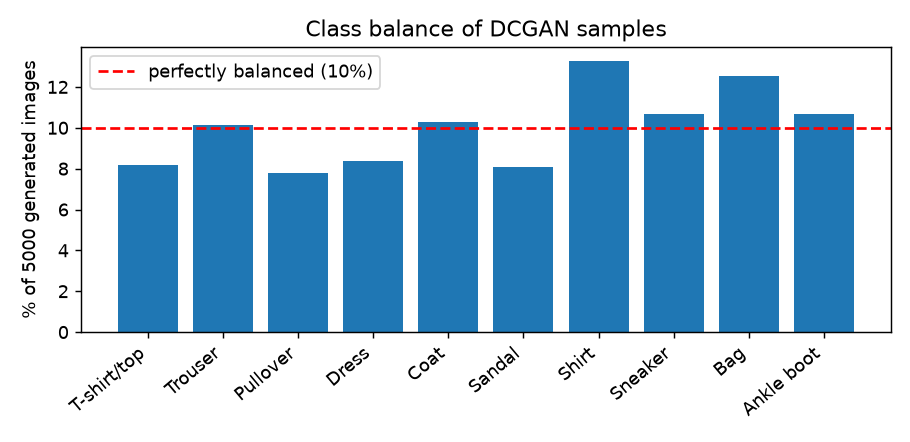

1. Generative vs discriminative
2. Latent walk: morph one item into another
Loading generator…
Latent sliders
Each slider moves one coordinate of z (first 8 of 100). Small moves change style; big ones change the item.
Pre-rendered interpolation GIF
3. Training: DCGAN vs VAE




A GAN trains two networks against each other, so images are sharp but training can be unstable (see the curves). A VAE learns an encoder and decoder with a smooth latent space and a stable loss, but its averaging makes outputs blurry.
4. Captions: GPT writes, BERT checks
distilgpt2 writes a caption for each generated item. A DistilBERT classifier then predicts the category from the caption text, and we compare it with the image classifier's label.
Limitation: the caption prompt contains the image classifier's label, so a match mainly shows the caption stayed on topic. If the image classifier is wrong, the caption is wrong too.
5. Responsible AI
Are the generated classes balanced?
5,000 random images were classified by a small CNN. A perfectly balanced generator gives 10% per class.

Licence note
Dataset: Fashion-MNIST © Zalando SE, released under the MIT License. Cite: Xiao, Rasul, Vollgraf (2017), arXiv:1708.07747. Captions use distilgpt2 and distilbert-base-uncased (Apache-2.0 on Hugging Face). Project code: MIT. Generated images are synthetic 28×28 grayscale clothing icons.
Safety notes
- The model only draws clothing silhouettes, but it can still produce malformed or ambiguous items.
- Captions come from a language model and may be generic or wrong. Treat them as demo text, not product facts.
- No user data is collected; everything runs in your browser.